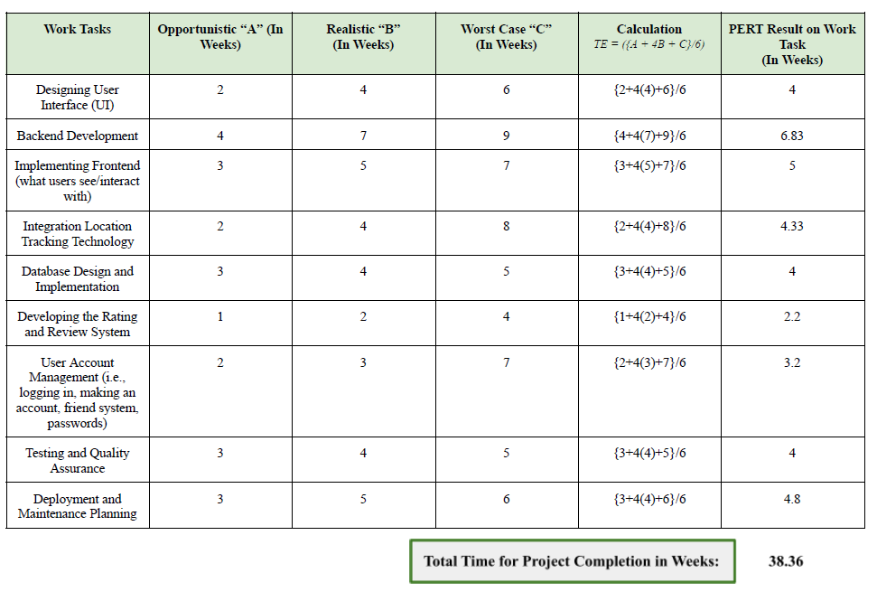
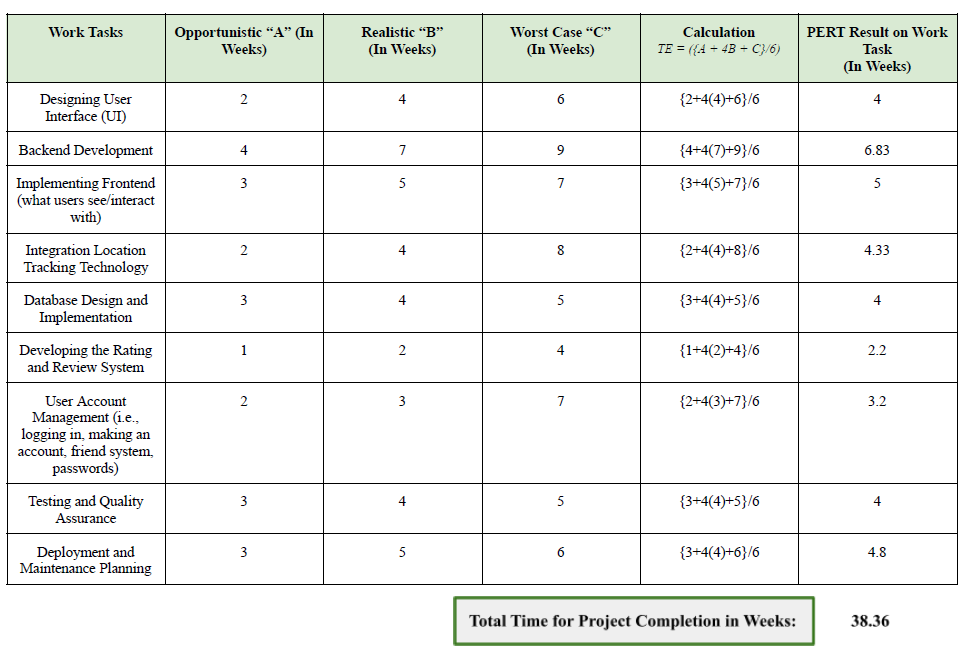

StudyScout
Overview
Roles: UX/UI, Research, System Design
Problem: Recently, research studies have begun to examine the connection between environment and student performance. As a student, I noticed many peers struggling with a of lack of sufficient study spaces for personal or project needs. This issue encompasses location, location attributes, and some way of connecting students with one another to share their experiences and build a more positive learning community.
What I did: I conceptualized an app that would allow students to rate study locations based on experience, attributes, and more. Furthermore, there would be social elements of the app, allowing students to connect with one another. Our team developed a problem statement, PERT development timeline, and personas in order to develop user flows and a high-fidelity model wireframe.
- System Proposal: Independently, I developed a research proposal on my system, including research from over 30 articles.
Let's Go!
Getting Started
Study spaces are where students spend the majority of their time.
Following the pandemic, researchers and university staff have turned their focus towards study spaces and student mental health. My project focuses on addressing several issues:
- Study space location and attributes: Helping students locate and classify study spaces.
- Student-based community: Allow students to take charge of identifying their needs and finding study spaces. Students also value peer feedback.
- Social aspects: Students build a supportive learning community as they can add existing friends or add new friends.
Problem Statement and Planning
 My problem statement.

Program Evaluation and Review Technique (PERT) project planning.
My problem statement.

Program Evaluation and Review Technique (PERT) project planning.

I identified our problem statement based on feedback from peers and personal observation.
We identified our problem statement, audience, development timeline, and system requirements.
- Problem Statement: My problem statement outlined an issue in terms of how we may address it with a system.
- Our Audience: University students needing places to study. We emphasized focus on allowing users to personalize their experiences.
- PERT Planning: We simulated our project in an AGILE development cycle environment. We considered development time for each stage at optimistic, realistic and worst-case scenarios.
- System Requirements: Based on our problem statement and the specific issues we were aiming to address, we identified five main system requirements for our project.
Personas
Our team noted key motivations and frustrations and how an individual's personal experiences might shape app usage or needs.
Notes: We considered several factors due to UNC-CH's diverse student body: such as major, study space preferences, commuter or on campus, etc. Furthermore, our personas included both undergraduate and graduate students.
User Flow
 We determined the system's purpose and the flow of a user using our app. We focused on the user's main goal of locating a study space.
We determined the system's purpose and the flow of a user using our app. We focused on the user's main goal of locating a study space.
Our system's main function is to locate a study space based on user needs: which can be location, attribute, or team (friend) based-needs.
Notes: We accounted for different user flows throughout our development stages.
Wireframes
Our team developed high-fidelity wireframes encompassing our vision of the project.
Design Notes:- Interactive Map: Allow users to visually and physically interact with locations.
- Search Options: Detailed and highly customizable search options, but not too specific or overwhelming
- Ratings: Allowing users to build a community and tag locations with the appropriate tags.
- Branding: Green is associated with growth and positivity.
Scenarios: With our user flow in mind, our team identified three scenarios we wanted to address in our wireframes:
- New user: User hears about StudyScout and creates a new account to study with their friends.
- Find a new study space: User wants to find a new cafe within walking distance to study at.
- Check my study space: User checks if their usual study spots are occupied. If yes, they need a new study spot according to their specific preferences. They might try to search their friends' locations too.
System Proposal
I developed a system proposal for this project highlighting user information needs and the basis behind my system.
Notes: This proposal discusses the need for the StudyScout app in university students today. I also cover relevant research on the links between study environment and users.
Conclusion
StudyScout offers a catch-all solution to several key issues. There's still room for development.
Next steps: We aim to implement future features such as study group options, accessibility, and university-based systems.
- Study groups: Implementing a "find study group" option can help students build new connections with peers.
- Accessibility: Allow users to search for locations with specific accommodations. App function can also be made accessible.
- University: University-specific communities can help encourage a more supportive learning environment on campus.
Acknowledgements
Thank you to my team members, Dr. Ryan Urquart for his feedback and support, and Dr. Leslie Thomson for her input. - Estella